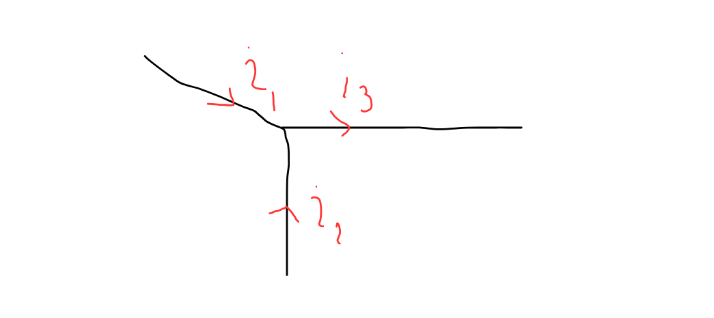
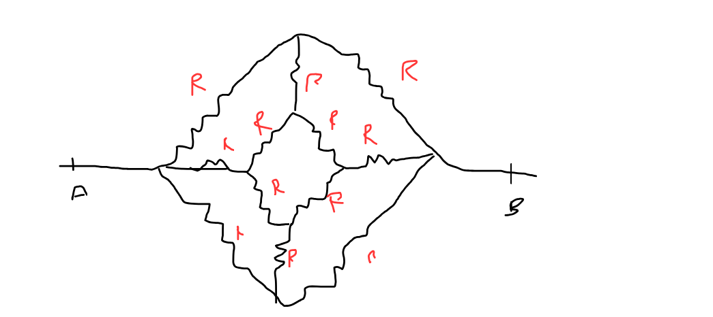
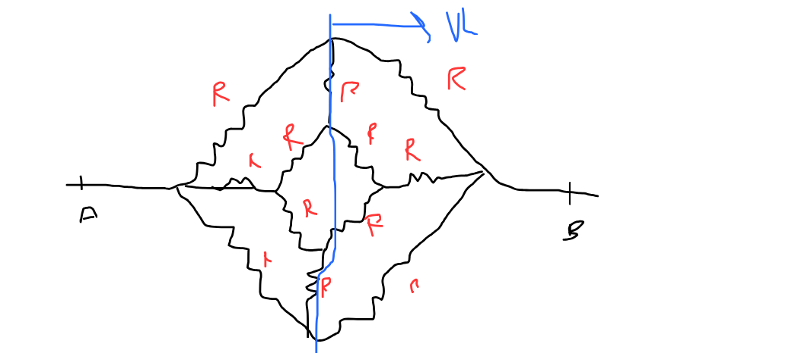
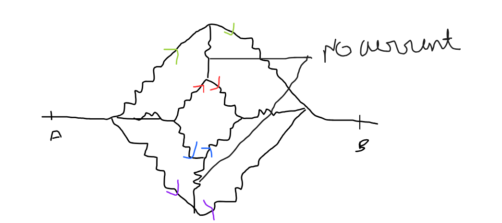
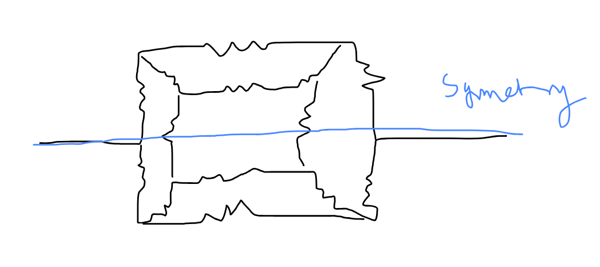
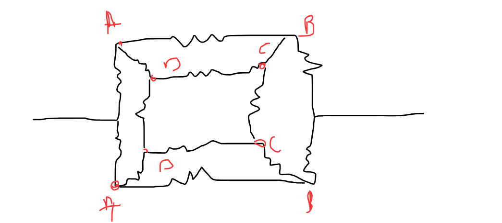
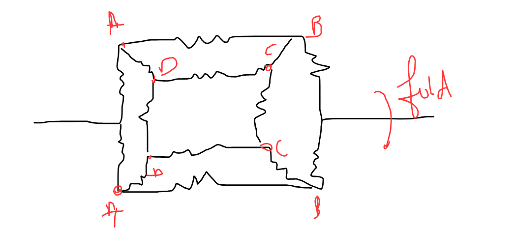
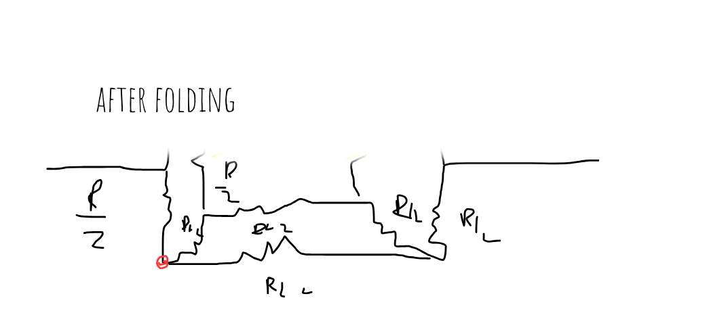
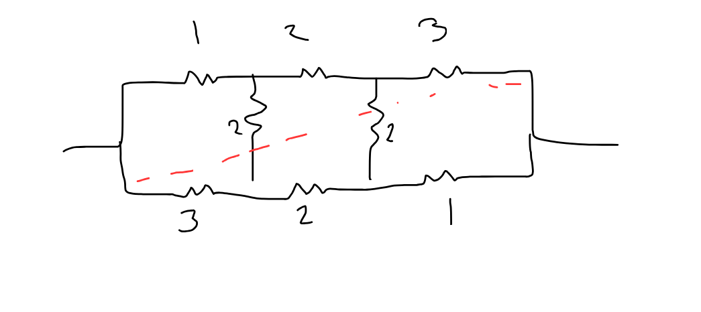
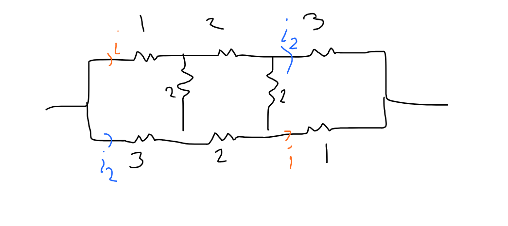

Method to solve Current problems with ease
In this article you would learn to know about symmetry and solving Tough current problems :D
In this article you would learn to know about symmetry and solving Tough current problems :D
Usually people apply some well know laws such as Kirchoff's current law and kircoff's Voltage law of potential drop which are the fundamental theories for our results which we are gonna see
This law states that the net current thorugh a node is always 0
Let us by convention take the current coming to a node as positive and coming out of the node as negative so as we can see in the figure the Net current must be 0 which implies i1 + i2 - i3 = 0

This states that the potential drop though any loop in a closed circuit is 0
As we can see here the potential drop though the circuit in this loop would be 0 which directly implies that i*R - V = 0 thorugh which we get our Ohm's law as V = iR
Since these are the basis of our methods and very important to intutively understand this so i would recommned you to go though it by a khan's academy video Kirchoff voltage law
Here in this section we are gonna talk about symmetry and how we can reduce complex looking circuits into an easy one with symmetry and recursion
Symmetries in circuit could be defined as vertical symmetry, horizonatal symmetry and diagonal symmetry, someotimes we could solve problems with superpositions and recursion
Though in this article i won't go thorugh the proof of all these inference of these symmetries but i want to try you to make your own proff and you can sumbit at the discord channel :D
Vertical symmetry is the symmetry where we can join the vertical line in the middle and both part would look reflection of each other

Here its a vertical symmetry of with resistor R across its lenghts

Here we could se we can make a vertical line hence this follows or comes under the vertical symmetric group of circuits
Though in a circuit where vertical symmetry is seen we can say that same current flows though the nodes lyin on the line of symmetry as it was going making these little resistors in series for example :D

And since no current flows in those two resitor so we could neglect those and solve Usually if you go try proving these results it could be easily done using the concept of biasness and Symmetry
We could give a argument of non-biasness and fairness behaviour of a circit and symmetry to prove this vertical result which i would insist you to try in your own
This is indeed an intresting one since it could reduce to complex problems to an easy one
As we can see we could draw a horizontal symmetric line as follow

Now the thing in horizontal symmetry is that all these nodes, you are seeing here in the horizontal symmetry have the same potential :D

So now since these have same potential indicated as A, B, C, D, why not we superimpose that
And since the potentail between horzontally symetric resistors are equal hence they can be considered in parallel while we are folding it right? by the defintion of parralel combinatroions

Then we can reduce it to...

See how it makes solving these problems so eassssysysyyssyys
This is one problem which i want you to solve using the knowledge you have gained till here try to solve this problem until you are satisfied
Here each edge represent a resitor of R so calculate the total resistance between A and B
Piss you could see here there are two symmetries being applied, Horizontal symmetry and vertical symmetry both, now you could think how to resolve this problem fully
Proving this result is stupidly easy but i still want you to try , you could use the concpet of potential drop using it you can prove
In diagonal symmetry the resitors are symmetric thourgh diagonals
Usually when we say that there is an diagonal symmetry then we can easity say this result which is given below.

Try to solve this question using normal methods like kirchoff's law or vertical and horizontal symmetry, it would be heck of a method but when i tell you this result(which you have to prove yourself, then you would say it was a piece, of cake (thick one))

So you see, there are equal current flowing as we can see from the diagram and this could be easily proved using the kirchoff's law :D
Now solving this would be a piece of cake :D